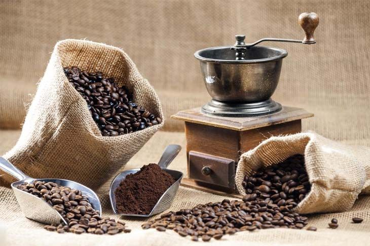

>
At JJA Cafe, we’re passionate about coffee – and we want you to be passionate about it too. The information below tells you what you need to know about making great coffee at home – and you can buy everything you need from our online shop.
Hey Jakub and Alex, we might put some info how to make coffee this page, what you think? have to put some coffee pics for selling too
[Back to the home page]